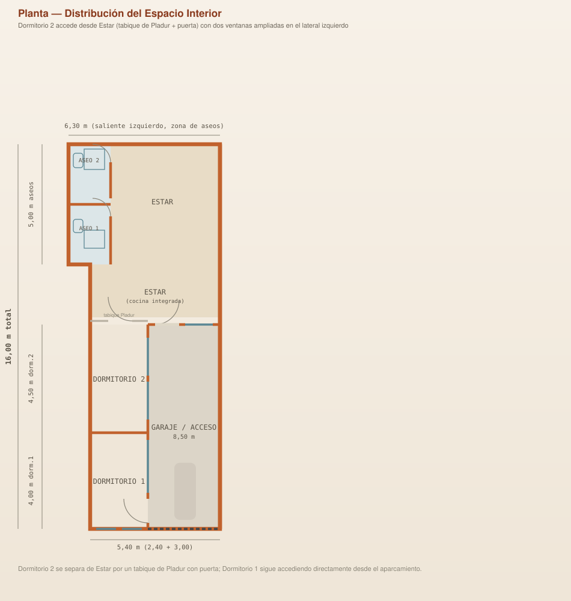
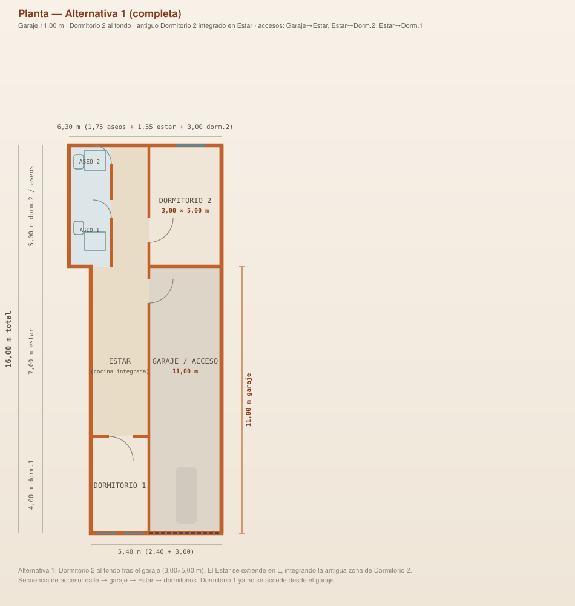
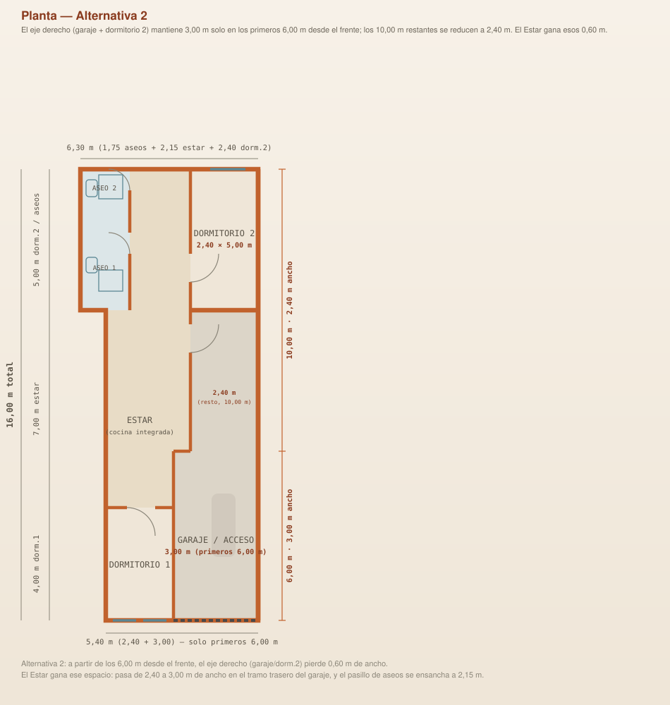

Cambio de uso · bajo comercial
Alternativas de planta para la nueva vivienda
Punto de partida de este trabajo: la distribución interior ya resuelta en el proyecto de referencia. A partir de ese plano —sus muros de carga, huecos y superficies— se plantearán distribuciones alternativas para el bajo comercial objeto de cambio de uso.
Plano de planta — distribución original
Distribución tal y como figura en el proyecto de referencia, usada como punto de partida para las alternativas.

Alternativa 1
Garaje ampliado a 11,00 m; Dormitorio 2 reubicado al fondo, tras el garaje; antiguo Dormitorio 2 integrado en el Estar.

Alternativa 2
A partir de los 6,00 m desde el frente, el eje garaje/Dormitorio 2 pierde 0,60 m de ancho (de 3,00 a 2,40 m); ese espacio lo gana el Estar.

Próximas alternativas
03
Pendiente de plantear